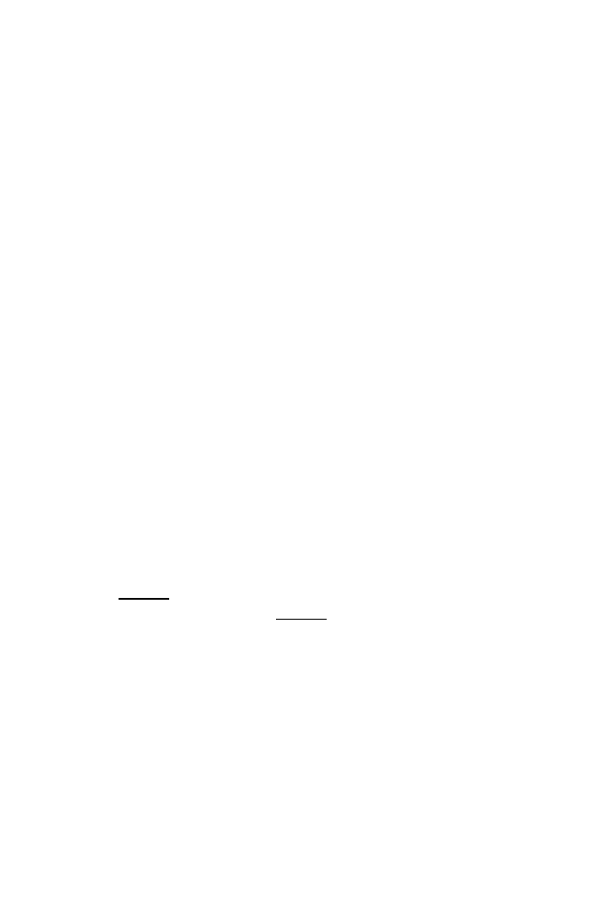

8.3 The Three-Step Method: Overlap, Layout, and Multiple Alignment
205
based on their scores. If, for example, two reads
r
and
s
of length 500 have
scores that indicate overlap of approximately 400 bases, then if
r
has a score
indicating a 300 base overlap with a third read
t
, then
t
must have at least a
200 base overlap with
s
; otherwise the pairwise scores are inconsistent with a
genomic layout. Fixing the orientation of one of the pairs of reads determines
the orientation for the remaining reads in the cluster.
Finally, there is the problem of determining the
consensus sequence
from the layout. It might be imagined that this is an easy job, and it would
be if the sequences were perfectly aligned. Unfortunately, as with many com-
putational problems in biology, this is almost never the case. Instead, se-
quencing errors, fragments incorrectly clustered, and the approximate nature
of the initial alignment all make this problem most challenging. A
greedy
procedure
(which recursively “grabs” solutions close to a local optimum; see
www.nist.gov/dads/HTML/greedyHeuristic.html
) allows an initial align-
ment, if desired, in the following manner. The highest-scoring overlap can be
fixed and the sequences aligned. Then the sequence with the highest overlap
score with any member of this cluster can be added, and so on. The identity
of the base at any position is then taken to be the majority letter in the re-
sulting multiple alignment. Of course, this is only the beginning of producing
a consensus sequence since the alignment is very unlikely to be correct.
To illustrate these ideas, we take a “toy” example through the assembly
process. The DNA to be sequenced is short (70 bases), and the reads are 8
bases long. This sequence is taken from an earlier example (Section 2.1) along
with enough 3
and 5
sequences (7 bases) on both ends, underlined in the
example below, so that the full 70 bases can be covered (if reads overlap the
ends). The reads are random in position and orientation, and the problem
is so small that we must take 100% accuracy in our reads. As we will see,
assembly is still not an entirely easy task. The DNA represented by the “top
strand” sequence is
5
−
CAGCGCGCTGCGTGACGAGTCTGACAAAGACGGTATGCGCATCGTGATTGAAGTG
AAACGCGATGCGGTCGGTGAAGTTGTGCT
−
3
Table 8.1 gives the 20 reads and their reverse complements (5
to 3
ori-
entation for both). The reads, which are a subset of all possible reads, were
chosen at random locations in the sequence and in random orientations (i.e.,
some correspond to the
complement
of the strand shown).
Next, we present a 20
×
20 overlap matrix (Fig. 8.3) that indicates which
fragments or their complements overlap by more than a prespecified number of
letters. In location (
k, l
) with
k < l
, the entry is the number of bases of overlap
for
r
k
versus
r
l
, and if
k > l
the entry is the number of bases of overlap of
r
k
with
r
∗
l
. No diagonal entries are made because alignments of a sequence with
itself are uninformative. If the best overlap is less than 3, it is not entered.
This is because, for iid letters, overlaps of two random letters happen 1
/
2
the time, and two-letter overlaps happen 1
/
8 of the time. (This calculation